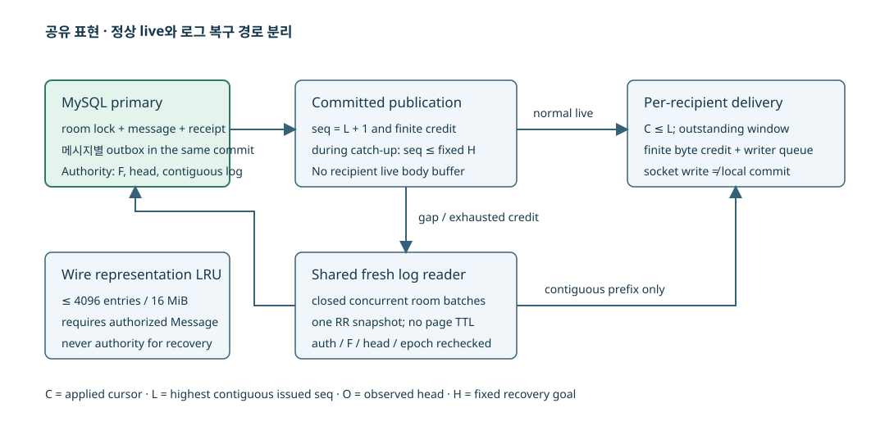
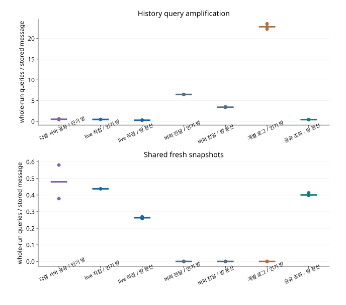

STORYBRIDGE · 설계와 검증
복구 조회 병합과 메시지 직렬화 재사용
방 단위 조회 병합, 불변 JSON 캐시, outbox 배치와 복구 스케줄링
인기 방의 수신자들이 비슷한 cursor에서 복구하면 같은 범위의 SQL 조회와 JSON 직렬화가 반복된다. worker 증설에 앞서 이 중복 작업을 줄이도록, 같은 방의 인접 범위 요청을 병합하고 메시지 표현을 재사용했다.
dispatcher가 확정한 요청 그룹에 하나의 snapshot을 공유하고, 불변 JSON과 UTF-8 길이는 크기가 제한된 로컬 캐시에 저장했다. 정상 live 전달은 복구 큐를 거치지 않도록 분리하고, 복구 작업은 고정 주기뿐 아니라 조회 완료와 APPLIED에 맞춰 다음 페이지를 요청하도록 변경했다.
공유 조회·표현 캐시·복구 스케줄링을 도입한 단계다. 당시 페이지 조회는 REPEATABLE READ를 사용했고, 후속 개선에서 단일 SELECT snapshot으로 변경했다. 최종 구현의 비교 결과
시스템 구성

수신자별 history 조회 증가
고정 구성원의 채팅은 commit된 메시지를 방의 연속 roomSeq로 조회할 수 있다. 메시지별 outbox는 발행 의도를 보존하지만 broker/socket 전달이 클라이언트 적용을 증명하지는 않는다. 느린 수신자는 자신의 연속 cursor에서 primary 로그를 다시 읽어야 한다. 기존 수신자별 로그 전달은 이 경로를 정상 전달에도 사용했기 때문에 수신자 수가 늘면 같은 페이지의 SQL·객체 생성·JSON 인코딩이 반복된다.
초기 비교에서 history 조회는 정상 부하 674→5184 회, 혼합 부하 833→6949 회로 증가했다. 수신자 수에 따른 중복 작업을 확인하기 위해 k6 부하를 늘리고 query counter·P_S digest·JFR을 수집했다. 인기 방 128 연결의 공유 조회·표현 캐시 pilot에서도 commit·outbox 완료 SQL과 문자열 직렬화 비용이 관측됐다. JFR ExecutionSample의 top frame 중 Jackson _writeString2 는 77 표본이었다. 스택 표본 수를 CPU 점유율로 환산할 수는 없지만, 반복 팬아웃에서 직렬화 비용을 줄일 근거로 사용했다.
동시 history 요청의 범위 병합
RoomReads는 (room, after/32)로 대기 중인 본문 조회를 묶고, head-only 요청은 별도 bucket으로 관리한다. SUBSCRIBE 권한을 확인한 고정 membership만 접수하며 요청과 callback에서 token 만료를 다시 검사한다. dispatcher가 요청 그룹을 확정하면 primary의 REPEATABLE READ 트랜잭션에서 floor·head·본문을 조회해 해당 그룹에만 snapshot을 공유하고, 이후 요청은 새 snapshot으로 처리한다.
예를 들어 한 수신자는 after=64, 다른 수신자는 after=70, 각각 최대 16 개를 요청한다. 같은 bucket이므로 공통 snapshot에서 65~86 을 읽고 각자의 bound와 limit로 잘라 준다. 각 결과는 after≥F−1, after≤head, bound≤head, 실제 연속 행 수를 다시 확인한다. 미래 메시지로 window를 채워 gap 복구를 막지 않는다. 공유 읽기는 소켓 write를 기다리지 않으며 callback은 현재 peer·subscription epoch가 여전히 유효한지 검사한다.
closed batch = pending[(room, after / 32)]
page = primary RR snapshot(F, head, bounded messages)
for each still-authorized request:
require after >= F - 1
require after <= bound <= head
slice contiguous messages up to request.limit
recheck peer identity and subscription epoch
reserve finite credit, enqueue socket framepending은 전체 4096, key 256, group 512 요청으로 제한한다. worker 2 개와 유한 executor queue를 두고 대기 순서를 유지한다. 목록도 같은 사용자·같은 pagination 위치의 동시 요청을 닫힌 batch로 묶되 방 본문과 목록 그룹을 번갈아 선택해 인기 방의 본문 복구 중에도 목록 조회가 진행되도록 했다. weighted fair queue는 적용하지 않았으며 사용자별 지연 상한도 보장하지 않는다. 과부하에서는 BUSY와 재시도가 생기고 정상 방의 실제 진행을 시험해야 한다.
history 페이지 TTL 캐시의 제약
완료된 history Page를 TTL 동안 재사용하려면 floor·head와 권한의 최신성을 별도로 관리해야 한다. retention 이후에도 이전 floor를 반환하면 삭제된 범위를 복구 가능하다고 판정할 수 있으므로, 동시 요청에 한해서 새 snapshot을 공유하는 방식을 택했다. 다만 방과 cursor가 분산되면 조회 병합률이 낮아진다.
불변 JSON 캐시와 권한·retention 검사
WireCache는 messageId→(hash, JSON 문자열)을 보관하는 LRU다. 최대 4096 entry, 기본 16MiB이며 문자열의 UTF-16 크기와 entry 여유분으로 메모리 비용을 계산한다. encode에는 권한을 확인한 현재 snapshot 또는 live publication의 Message만 전달한다. messageId만으로 캐시 본문을 조회할 수 없으므로 cache hit 여부와 무관하게 인증·방 권한·floor·head·이력 연속성을 검사한다.
retention으로 삭제된 메시지 표현이 eviction 전까지 메모리에 남더라도 그 표현만으로 전송을 시작할 경로는 없다. 동일 ID의 hash가 바뀌면 불변 조건 위반으로 실패한다. cold miss는 실제 Message를 JSON으로 인코딩하고, 같은 시점의 miss는 짧은 동기화 구간에서 중복 인코딩을 줄인다. 이때 캐시 lock 아래 DB·socket I/O는 하지 않으며, eviction이나 JVM 종료는 성능 상태만 잃으며 복구 원본은 MySQL에 남는다.
캐시는 기존 전달 메모리 예산 안에서 사용한다. 단일 공유 조회·표현 캐시는 credit 32MiB+표현 16MiB, 버퍼 기반 전달은 credit32MiB+live buffer16MiB, 수신자별 로그 전달은 credit48MiB다. RabbitMQ·공유 복구는 gateway당 credit16MiB+표현 8MiB로 합계 48MiB다. 이 byte envelope는 모든 Java 객체의 heap 상한과 동일하지 않아 별도로 heap/RSS/GC를 측정한다. 방 집중도가 낮거나 캐시 동기화 경합이 커지면 개선 폭이 줄어든다.
outbox 완료 갱신의 JDBC batch 처리
메시지별 outbox의 발행 의도는 유지하되, 한 poll에서 claim한 최대 32 개 중 실제 발행 경계를 통과한 lease만 모아 한 transaction/JDBC batch로 DONE 처리한다. UPDATE에는 id와 lease token 조건이 남아 있어 늦은 worker가 새 소유자의 상태를 덮지 않는다. RabbitMQ 구성에서는 broker confirm/return 판정 후에만 완료 목록에 넣는다. 클라이언트 적용 여부는 ACK·DB 저장 상태와 별도로 확인한다.
발행 후 완료 batch commit 전에 죽으면 일부 메시지가 재발행될 수 있지만, 이를 없애려고 durable 의도를 먼저 지우지는 않는다. 메시지 ID·roomSeq의 로컬 중복 방지와 독립 head 복구가 중복 효과를 막는다. poison은 격리하고 일시 DB/broker 실패는 retry/backoff로 남긴다. 더 큰 batch는 commit 수를 줄일 수 있지만 재발행 묶음·지연·lease 보유 시간을 늘리므로 이번 범위는 claim32 를 유지한다.
outbox 인덱스 추가 검토
완료 outbox가 누적되면 SEND의 pending count가 전체를 훑을 것이라는 가설을 실제 EXPLAIN ANALYZE로 검사했다. 6083 개 완료행에서 outbox_ready 인덱스의 state 범위 scan은 반환/검사 0 행, aggregate 약 0.012ms였다. claim query도 같은 인덱스 범위에서 대기행을 찾았다. 이 표본은 backlog가 큰 모든 경우의 계획을 보장하지 않지만, 관측한 상황에서 인덱스를 추가할 근거는 없었다. 대신 실제로 누적된 완료 transaction 비용을 줄였다.
outbox claim·본문 조회·완료 SQL 배치
공유 조회·표현 캐시/정상 live 직접 전달의 JDBC batch는 완료 commit을 줄였지만 claim의 행별 UPDATE, 발행 본문 행별 SELECT, 완료 batch의 각 UPDATE 왕복이 남았다. 정상 live 직접 전달의 1000/s pilot은 측정 이후 15 초 감사 구간에도 outbox 2794 개가 미완료였다. SQL 왕복을 줄이기 위해 outbox SQL 배치에서 최대 32 개 ID를 하나의 claim UPDATE, 본문 JOIN SELECT, 같은 token·outcome의 완료 UPDATE로 묶었다. 동적 IN 목록은 1~32 개 placeholder로 제한한다. 메시지별 outbox 행은 그대로 남으며 발행 head 병합으로 내구성 의미를 바꾸지 않았다.
SELECT ... FROM outbox ... LIMIT 32 FOR UPDATE SKIP LOCKED;
UPDATE outbox SET state='LEASED', lease_token=?, lease_until=?,
attempts=attempts+1 WHERE id IN (?, ...); -- same locked transaction
SELECT o.id, o.lease_token, m.* FROM outbox o JOIN message m
ON m.room_id=o.room_id AND m.seq=o.seq
WHERE o.state='LEASED' AND o.id IN (?, ...);
-- only actual publish/confirm successes, grouped by token and outcome
UPDATE outbox SET state='DONE', lease_until=0, last_error=?
WHERE state='LEASED' AND lease_token=? AND id IN (?, ...);같은 batch token을 쓰더라도 fencing 조건은 (id, token)이다. 다른 worker가 lease를 가져가면 이전 완료 UPDATE는 해당 행을 바꾸지 못한다. 최대 32 개 본문을 먼저 읽는 메모리와 발행 후 완료 전에 죽었을 때의 중복 재발행 비용을 추가한다. outbox SQL 배치의 1000/s pilot에서는 발행 잔량이 0 이 됐지만 성공 저장량·발생기 drop은 악화했다. 단일 pilot이며 저장·발생 지표가 악화돼 추가 비교가 필요했다.
live 전달과 로그 복구 경로 분리
공유 조회·표현 캐시의 첫 500 연결 분산 방 결과는 조회와 CPU를 줄였지만 정상 수신 p99 451ms, pending 최대 494 개로 지연 목표를 넘었다. 따라서 정상 live 전달과 로그 복구를 분리했다. commit된 불변 본문이 이미 있고 다음 seq이며 credit 여유가 있는 수신자에게는 즉시 전송한다. gap·credit 소진 수신자는 기존 공유 로그 복구로 보내며, 수신자별 새 body buffer는 추가하지 않았다.
이 변경은 복구의 DB 권위를 유지하면서 정상 전달을 read queue에서 분리한다. publisher가 없는 seq를 만들지 않고 동일 roomSeq와 메시지 hash를 사용한다. 순서가 바뀐 broker 알림은 gap을 뛰어넘지 못하며, 복구에서 고정한 목표 순번 H까지 연속 적용한 후 LIVE로 돌아온다. live 경로 분리 전후와 RabbitMQ 구성의 소스·측정 결과는 별도로 관리했다.

| 실행 | history / 고유 저장 | 본문 batch snapshot / 공유 수신 요청 | wire hit / miss / eviction | outbox 완료 transaction |
|---|---|---|---|---|
| RabbitMQ·공유 복구 / 인기 방 100 건/초 · 60 초 / 반복 1 | 2,749 / 6,586 | 2,493 / 79,013 | 1,672,845 / 13,172 / 4,980 | 2674 |
| RabbitMQ·공유 복구 / 인기 방 100 건/초 · 60 초 / 반복 2 | 3,861 / 6,204 | 3,605 / 82,128 | 1,575,843 / 12,408 / 4,216 | 2557 |
| 정상 live 직접 전달 / 인기 방 100 건/초 · 60 초 / 반복 1 | 3,070 / 6,430 | 2,814 / 33,731 | 1,639,650 / 6,430 / 2,334 | 1638 |
| 정상 live 직접 전달 / 방 분산 250 건/초 · 60 초 / 반복 1 | 5,203 / 17,481 | 4,703 / 41,995 | 264,471 / 17,481 / 13,385 | 1455 |
| 정상 live 직접 전달 / 방 분산 250 건/초 · 60 초 / 반복 2 | 5,105 / 17,493 | 4,605 / 42,249 | 264,655 / 17,493 / 13,397 | 1511 |
| 정상 live 직접 전달 / 방 분산 250 건/초 · 60 초 / 반복 3 | 5,013 / 17,498 | 4,513 / 41,314 | 264,730 / 17,498 / 13,402 | 1551 |
| 버퍼 기반 전달 / 인기 방 100 건/초 · 60 초 / 반복 1 | 38,700 / 5,961 | 0 / 0 | 0 / 0 / 0 | per-message baseline |
| 버퍼 기반 전달 / 인기 방 100 건/초 · 60 초 / 반복 2 | 39,020 / 6,006 | 0 / 0 | 0 / 0 / 0 | per-message baseline |
| 버퍼 기반 전달 / 인기 방 100 건/초 · 60 초 / 반복 3 | 38,999 / 6,030 | 0 / 0 | 0 / 0 / 0 | per-message baseline |
| 버퍼 기반 전달 / 방 분산 250 건/초 · 60 초 / 반복 1 | 59,009 / 17,244 | 0 / 0 | 0 / 0 / 0 | per-message baseline |
| 버퍼 기반 전달 / 방 분산 250 건/초 · 60 초 / 반복 2 | 58,804 / 17,185 | 0 / 0 | 0 / 0 / 0 | per-message baseline |
| 버퍼 기반 전달 / 방 분산 250 건/초 · 60 초 / 반복 3 | 60,459 / 17,221 | 0 / 0 | 0 / 0 / 0 | per-message baseline |
| 수신자별 로그 전달 / 인기 방 100 건/초 · 60 초 / 반복 1 | 129,233 / 5,497 | 0 / 0 | 0 / 0 / 0 | per-message baseline |
| 수신자별 로그 전달 / 인기 방 100 건/초 · 60 초 / 반복 2 | 128,741 / 5,650 | 0 / 0 | 0 / 0 / 0 | per-message baseline |
| 수신자별 로그 전달 / 인기 방 100 건/초 · 60 초 / 반복 3 | 123,906 / 5,577 | 0 / 0 | 0 / 0 / 0 | per-message baseline |
| 공유 조회·표현 캐시 / 방 분산 250 건/초 · 60 초 / 반복 1 | 7,463 / 17,490 | 6,963 / 109,293 | 264,606 / 17,490 / 13,394 | 1552 |
| 공유 조회·표현 캐시 / 방 분산 250 건/초 · 60 초 / 반복 2 | 7,729 / 17,495 | 7,229 / 113,056 | 264,685 / 17,495 / 13,399 | 1537 |
| 공유 조회·표현 캐시 / 방 분산 250 건/초 · 60 초 / 반복 3 | 7,508 / 17,499 | 7,008 / 109,375 | 264,745 / 17,499 / 13,403 | 1577 |
| RabbitMQ·완료 알림 복구 / 인기 방 100 건/초 · 60 초 / 반복 1 | 8,013 / 4,365 | 7,757 / 62,052 | 1,109,498 / 8,730 / 538 | 1904 |
| RabbitMQ·완료 알림 복구 / 인기 방 100 건/초 · 60 초 / 반복 2 | 6,297 / 5,013 | 6,041 / 57,744 | 1,273,567 / 10,026 / 1,834 | 2213 |
| RabbitMQ·완료 알림 복구 / 인기 방 100 건/초 · 60 초 / 반복 3 | 6,970 / 4,595 | 6,714 / 59,786 | 1,167,418 / 9,190 / 998 | 2011 |
| 완료 알림 기반 복구 / 인기 방 100 건/초 · 60 초 / 반복 1 | 6,762 / 4,808 | 6,506 / 44,349 | 1,226,040 / 4,808 / 712 | 1449 |
| 완료 알림 기반 복구 / 인기 방 100 건/초 · 60 초 / 반복 2 | 6,340 / 4,696 | 6,084 / 44,512 | 1,197,489 / 4,696 / 600 | 1403 |
| 완료 알림 기반 복구 / 인기 방 100 건/초 · 60 초 / 반복 3 | 5,997 / 4,401 | 5,741 / 43,322 | 1,122,255 / 4,401 / 305 | 1507 |
| 완료 알림 기반 복구 / 혼합 250 건/초 · 60 초 / 반복 1 | 13,942 / 6,148 | 13,442 / 125,828 | 1,130,307 / 6,148 / 2,052 | 1063 |
| 완료 알림 기반 복구 / 혼합 250 건/초 · 60 초 / 반복 2 | 11,912 / 5,900 | 11,412 / 115,063 | 1,021,634 / 5,900 / 1,804 | 1023 |
| 완료 알림 기반 복구 / 혼합 250 건/초 · 60 초 / 반복 3 | 11,753 / 5,762 | 11,253 / 115,233 | 1,000,987 / 5,762 / 1,666 | 936 |
| 완료 알림 기반 복구 / 방 분산 1000 건/초 · 60 초 / 반복 1 | 10,855 / 18,797 | 10,355 / 55,751 | 284,441 / 18,797 / 14,701 | 873 |
| 완료 알림 기반 복구 / 방 분산 1000 건/초 · 60 초 / 반복 2 | 11,376 / 21,044 | 10,876 / 55,982 | 318,420 / 21,044 / 16,948 | 920 |
| 완료 알림 기반 복구 / 방 분산 1000 건/초 · 60 초 / 반복 3 | 10,423 / 20,678 | 9,923 / 57,008 | 312,777 / 20,678 / 16,582 | 898 |
| 완료 알림 기반 복구 / 방 분산 250 건/초 · 60 초 / 반복 1 | 16,031 / 17,216 | 15,531 / 48,757 | 260,460 / 17,216 / 13,120 | 1658 |
| 완료 알림 기반 복구 / 방 분산 250 건/초 · 60 초 / 반복 2 | 15,658 / 17,103 | 15,158 / 48,775 | 258,747 / 17,103 / 13,007 | 1603 |
| 완료 알림 기반 복구 / 방 분산 250 건/초 · 60 초 / 반복 3 | 15,205 / 17,199 | 14,705 / 48,560 | 260,203 / 17,199 / 13,103 | 1610 |
| 버퍼 기반 전달 / 혼합 250 건/초 · 60 초 / 반복 1 | 61,849 / 6,184 | 0 / 0 | 0 / 0 / 0 | per-message baseline |
| 버퍼 기반 전달 / 혼합 250 건/초 · 60 초 / 반복 2 | 51,247 / 6,735 | 0 / 0 | 0 / 0 / 0 | per-message baseline |
| 버퍼 기반 전달 / 혼합 250 건/초 · 60 초 / 반복 3 | 51,174 / 6,596 | 0 / 0 | 0 / 0 / 0 | per-message baseline |
| 버퍼 기반 전달 / 방 분산 1000 건/초 · 60 초 / 반복 1 | 53,626 / 19,550 | 0 / 0 | 0 / 0 / 0 | per-message baseline |
| 버퍼 기반 전달 / 방 분산 1000 건/초 · 60 초 / 반복 2 | 47,267 / 18,372 | 0 / 0 | 0 / 0 / 0 | per-message baseline |
| 버퍼 기반 전달 / 방 분산 1000 건/초 · 60 초 / 반복 3 | 46,235 / 19,881 | 0 / 0 | 0 / 0 / 0 | per-message baseline |
좁은 화면에서는 표를 좌우로 이동할 수 있습니다. 수치와 단위는 원본의 반복별 값을 유지했습니다.
복구 dispatcher의 주기 대기
정상 live 직접 전달의 혼합 500 연결/250SEND/s/느린 수신 25% 시험은 정상 방 p99 66ms를 유지했지만 인기 방 400 명의 복구가 밀려 기한 내 전달 의무 3,464,139 개가 미완료였다. 서버 CPU214%, k6 201%여서 물리 CPU 포화로 설명할 수 없었다. JFR 실행 표본과 스케줄러 코드를 대조하고 queue/query/callback 시간을 추가 계측했다. ACK 기반 보충만 넣은 적용 확인 기반 복구 pilot에서도 요청 대기 평균은 약 249ms, DB 조회는 그룹당 약 4ms였다. worker가 비어도 dispatcher가 고정 주기마다 그룹 하나만 처리하는 구조가 복구 진전을 제한했다.
완료 알림 기반 복구는 기존 두 DB worker와 유한 대기열을 유지하면서 제출·작업 완료가 dispatcher를 깨우게 바꾸고, 알림은 AtomicBoolean으로 합쳐 dispatcher 작업이 요청 수만큼 쌓이지 않는다. 동시에 실행하는 그룹은 2 개이고, 목록과 본문 그룹을 번갈아 꺼낸다. ACK 후 window의 절반 이상이 비면 기존 목표 순번 H(해당 복구 시작 시 고정)까지 다음 페이지를 요청한다. 새 I/O executor 중계는 제거하되 DB 작업은 여전히 peer monitor 밖의 worker에서만 수행한다.
on APPLIED(cursor):
release credit only through validated continuous cursor
if due LIST or independent HEAD: retain metadata priority
else if free credit >= half-window and L < fixed H:
enqueue one bounded shared read
on shared-read completion:
decrement active groups; enqueue at most one dispatcher signal
dispatch next waiting groups while active groups < 2첫 완료 알림 기반 복구 혼합 pilot은 전달 의무 1,060,132 개를 모두 마쳤지만, 측정 구간 저장 성공은 5181 개, 명시적 거절은 9789 개, 최종 미확정은 30 개였다. 서버 CPU589%, k6 759%이고 정상 방 p99 도 약 282ms로 목표를 넘었다. 저장량 감소로 전달 의무도 줄어든 결과이므로 복구 효율만의 효과로 볼 수는 없다. 대기 감소는 원인 가설을 지지하지만 전체 채택 판단에는 아래의 동일 부하 기준 비교와 독립 반복이 필요하다.
복구 대기와 SQL 시간의 분리
대기 시간은 batch_wait_nanos/batch_requests로 계산한 요청당 근사이고 SQL 시간은 batch_query_nanos/batch_snapshots의 성공 그룹당 평균이다. 종료 때 대기 요청이 남으면 첫 평균은 완료 요청의 순수 평균보다 작아질 수 있으며, 두 평균의 분모도 다르다. 이 계측과 dispatcher 코드가 함께 타이머 제한 가설을 뒷받침한다. 완료 알림 기반 복구는 더 많은 작업을 실행하므로 CPU와 완료 처리량을 함께 비교해야 한다.
| 실행 | 요청당 대기 근사(ms) | 그룹 SQL 평균(ms) | 최종 전달 미완료 | 서버 / k6 CPU(%) |
|---|---|---|---|---|
| 적용 확인 기반 복구 / 혼합 250 건/초 · 60 초 / 탐색·진단 | 251.12 | 3.98 | 2241666 | 350.8 / 371.1 |
| 완료 알림 기반 복구 / 혼합 250 건/초 · 60 초 / 반복 1 | 42.36 | 7.25 | 0 | 577.5 / 771.9 |
| 완료 알림 기반 복구 / 혼합 250 건/초 · 60 초 / 반복 2 | 54.04 | 8.95 | 0 | 581.2 / 775.6 |
| 완료 알림 기반 복구 / 혼합 250 건/초 · 60 초 / 반복 3 | 51.89 | 8.81 | 0 | 586.1 / 746.6 |
| 완료 알림 기반 복구 / 혼합 250 건/초 · 60 초 / 탐색·진단 | 51.1 | 8.51 | 0 | 589.5 / 759.0 |
| 정상 live 직접 전달 / 혼합 250 건/초 · 30 초 / 탐색·진단 | 미계측 | 미계측 | 0 | 588.2 / 740.0 |
| 수신 버퍼 개선 / 혼합 250 건/초 · 60 초 / 탐색·진단 | 29.06 | 4.93 | 0 | 555.6 / 773.7 |
| 수신 버퍼 개선·단계 계측 / 혼합 250 건/초 · 60 초 / 탐색·진단 | 34.88 | 7.06 | 0 | 582.3 / 731.4 |
| outbox SQL 배치 / 혼합 250 건/초 · 60 초 / 탐색·진단 | 미계측 | 미계측 | 2793542 | 291.6 / 304.8 |
| 단일 SELECT 복구 / 혼합 250 건/초 · 60 초 / 탐색·진단 | 22.4 | 1.97 | 0 | 558.3 / 822.6 |
좁은 화면에서는 표를 좌우로 이동할 수 있습니다. 수치와 단위는 원본의 반복별 값을 유지했습니다.
미계측 후보는 시간 0 으로 채우지 않는다. 이전 정상 live 직접 전달 혼합 미완료 근거는 정상 live 직접 전달 / 혼합 250 건/초 · 60 초 / 탐색·진단, outbox SQL 배치만 적용한 실패는 outbox SQL 배치 / 혼합 250 건/초 · 60 초 / 탐색·진단, ACK 보충만 적용한 적용 확인 기반 복구는 적용 확인 기반 복구 / 혼합 250 건/초 · 60 초 / 탐색·진단다.
작업 완료 기반 스케줄링 구현
dispatcher와 작업 완료 처리는 다음과 같이 구현했다. 작업이 완료되면 running을 감소시키고 하나의 dispatcher 알림을 보내되, 별도의 슬롯 예산 2 를 넘겨 실행하지 않는다.
private void requestDispatch(){
if(dispatchQueued.compareAndSet(false,true))try{dispatcher.execute(()->{dispatchQueued.set(false);dispatch();});}catch(RejectedExecutionException e){dispatchQueued.set(false);}
}
private void execute(Runnable task){
running++;
try{workers.execute(()->{try{task.run();}finally{synchronized(this){running--;}requestDispatch();}});}
catch(RejectedExecutionException e){running--;throw e;}
}
private synchronized void dispatch(){
// Fill both slots. Completion notifications replace timer-paced throughput.
for(int slot=0;slot<2;slot++)dispatchOne();메시지별 outbox 완료 SQL은 선택한 ID와 동일 lease token을 동시에 만족해야 한다. broker 후보에서는 이 함수에 전달하는 completed가 실제 confirm/return 결과로 결정된다.
public int finishBatch(java.util.Map<Lease,String> completed) {
if(completed.isEmpty())return 0;
if(completed.size()>32)throw new IllegalArgumentException("batch bound");
record Finish(String token,String outcome){}
var groups=new java.util.LinkedHashMap<Finish,java.util.List<Long>>();
completed.forEach((lease,outcome)->groups.computeIfAbsent(new Finish(lease.token(),outcome),k->new java.util.ArrayList<>()).add(lease.id()));
return write.execute(status->{
int changed=0;
for(var e:groups.entrySet()){
var args=new java.util.ArrayList<Object>();args.add(e.getKey().outcome());args.add(e.getKey().token());args.addAll(e.getValue());
changed+=jdbc.update("UPDATE outbox SET state='DONE',lease_until=0,last_error=? WHERE state='LEASED' AND lease_token=? AND id IN ("+placeholders(e.getValue().size())+")",args.toArray());metrics.inc("outbox_finish_updates");
}
metrics.inc("outbox_finish_transactions");return changed;
});
}
실제 JFR·SQL digest 후처리: 완료 알림 기반 복구 / 인기 방 250 건/초 · 60 초 / 탐색·진단 (원본 완료 알림 기반 복구 / 인기 방 250 건/초 · 60 초 / 탐색·진단). 원래 측정 순간의 화면이 아니라 원본을 재해석한 보고서다.
실제 JFR·SQL digest 후처리: 정상 live 직접 전달 / 혼합 250 건/초 · 30 초 / 탐색·진단 (원본 정상 live 직접 전달 / 혼합 250 건/초 · 30 초 / 탐색·진단). 원래 측정 순간의 화면이 아니라 원본을 재해석한 보고서다.
실제 JFR·SQL digest 후처리: 수신 버퍼 개선·단계 계측 / 혼합 250 건/초 · 30 초 / 탐색·진단 (원본 수신 버퍼 개선·단계 계측 / 혼합 250 건/초 · 30 초 / 탐색·진단). 원래 측정 순간의 화면이 아니라 원본을 재해석한 보고서다.
실제 JFR·SQL digest 후처리: 직렬화 prefix 재사용 / 혼합 250 건/초 · 60 초 / 탐색·진단 (원본 직렬화 prefix 재사용 / 혼합 250 건/초 · 60 초 / 탐색·진단). 원래 측정 순간의 화면이 아니라 원본을 재해석한 보고서다.
실제 JFR·SQL digest 후처리: 소켓 쓰기 배치 / 혼합 250 건/초 · 60 초 / 탐색·진단 (원본 소켓 쓰기 배치 / 혼합 250 건/초 · 60 초 / 탐색·진단). 원래 측정 순간의 화면이 아니라 원본을 재해석한 보고서다.
실제 JFR·SQL digest 후처리: 단일 SELECT 복구 / 혼합 250 건/초 · 30 초 / 탐색·진단 (원본 단일 SELECT 복구 / 혼합 250 건/초 · 30 초 / 탐색·진단). 원래 측정 순간의 화면이 아니라 원본을 재해석한 보고서다.
실제 JFR·SQL digest 후처리: 공유 조회·표현 캐시 / 인기 방 100 건/초 · 60 초 / 탐색·진단 (원본 공유 조회·표현 캐시 / 인기 방 100 건/초 · 60 초 / 탐색·진단). 원래 측정 순간의 화면이 아니라 원본을 재해석한 보고서다.
SQL·JFR 진단 자료
| thread | top frame | samples |
|---|---|---|
| outbox | java/lang/String.hashCode | 23 |
| http-nio-127.0.0.1-18080-Poller | org/apache/tomcat/util/net/NioEndpoint$Poller.timeout | 14 |
| outbox | java/util/concurrent/locks/AbstractQueuedSynchronizer.enqueue | 13 |
| outbox | dev/storybridge/Gateway.issue | 12 |
| outbox | com/fasterxml/jackson/core/json/WriterBasedJsonGenerator._writeString2 | 11 |
전체 SQL·프레임·관측값
실행 후 추출한 JFR·SQL 결과다. ExecutionSample은 스택 표본 수이며 CPU 점유율과 다르다. SQL 시간은 statement별 누적 시간이다.
JFR 상위 실행 프레임
| thread | top frame | samples |
|---|---|---|
| outbox | java/lang/String.hashCode | 23 |
| http-nio-127.0.0.1-18080-Poller | org/apache/tomcat/util/net/NioEndpoint$Poller.timeout | 14 |
| outbox | java/util/concurrent/locks/AbstractQueuedSynchronizer.enqueue | 13 |
| outbox | dev/storybridge/Gateway.issue | 12 |
| outbox | com/fasterxml/jackson/core/json/WriterBasedJsonGenerator._writeString2 | 11 |
| outbox | com/fasterxml/jackson/core/util/BufferRecycler.releaseCharBuffer | 10 |
| peer-clock | java/util/TreeMap.getFirstEntry | 10 |
| room-read-0 | com/mysql/cj/util/StringInspector.indexOfNextChar | 9 |
| outbox | java/util/concurrent/ConcurrentHashMap.computeIfAbsent | 9 |
| outbox | com/mysql/cj/util/StringInspector.indexOfNextChar | 9 |
| outbox | dev/storybridge/Gateway.publish | 8 |
| room-read-0 | java/util/HashMap.getNode | 7 |
| room-read-1 | com/mysql/cj/util/StringInspector.indexOfNextChar | 7 |
| room-dispatch | java/util/concurrent/ThreadPoolExecutor.runWorker | 7 |
| outbox | java/util/HashMap.getNode | 7 |
| outbox | java/util/concurrent/atomic/LongAdder.add | 7 |
| peer-clock | java/util/concurrent/ConcurrentHashMap$Traverser.advance | 7 |
| outbox | java/util/concurrent/locks/AbstractQueuedSynchronizer.signalNext | 7 |
| room-read-1 | java/util/HashMap.getNode | 6 |
| http-nio-127.0.0.1-18080-Poller | java/util/concurrent/locks/AbstractQueuedSynchronizer.enqueue | 6 |
| MySQL Statement Cancellation Timer | java/util/TimerThread.mainLoop | 6 |
| room-read-1 | java/util/concurrent/locks/AbstractQueuedSynchronizer.signalNext | 6 |
| room-read-0 | java/util/concurrent/locks/AbstractQueuedSynchronizer.signalNext | 5 |
| http-nio-127.0.0.1-18080-exec-3 | java/lang/String.hashCode | 5 |
| http-nio-127.0.0.1-18080-exec-3 | java/util/HashMap.getNode | 5 |
MySQL statement별 누적 비용
| statement | calls | total ms | lock ms | examined |
|---|---|---|---|---|
| COMMIT | 16090 | 24213.02 | 0.0 | 0 |
| SET `autocommit` = ? | 32284 | 6580.69 | 0.0 | 0 |
| SELECT `r` . `id` , `r` . `head` , LEFT ( `r` . `last_body` , ? ) , `m` . `read_seq` FROM `membership` `m` JOIN `room` `r` ON `r` . `id` = `m` . `room_id` WHERE `m` . `user_id` = ? AND `r` . `id` > ? ORDER BY `r` . `id` LIMIT ? | 8904 | 5372.58 | 29.95 | 120822 |
| SELECT COUNT ( * ) FROM `membership` WHERE `room_id` = ? AND `user_id` = ? | 11918 | 4512.89 | 46.42 | 11918 |
| SELECT COUNT ( * ) FROM `outbox` WHERE `room_id` = ? AND `state` != ? | 5584 | 2905.11 | 11.32 | 14759 |
| INSERT INTO `message` VALUES (...) | 5584 | 2659.11 | 13.75 | 0 |
| UPDATE `room` SET `head` = ? , `last_body` = ? WHERE `id` = ? | 5584 | 2606.0 | 12.1 | 5584 |
| INSERT INTO `outbox` ( `room_id` , `seq` ) VALUES (...) | 5584 | 2216.19 | 12.56 | 0 |
| INSERT INTO `send_receipt` VALUES (...) | 5584 | 2211.74 | 12.61 | 0 |
| SELECT * FROM `send_receipt` WHERE `room_id` = ? AND `sender_id` = ? AND `client_key` = ? | 5643 | 2047.42 | 11.56 | 6 |
| SELECT `head` , `floor_seq` FROM `room` WHERE `id` = ? | 6275 | 2039.87 | 13.32 | 6276 |
| SELECT `head` FROM `room` WHERE `id` = ? FOR UPDATE | 5584 | 1964.81 | 13.59 | 5584 |
| SELECT * FROM `message` WHERE `room_id` = ? AND `seq` > ? AND `seq` <= ? ORDER BY `seq` LIMIT ? | 3771 | 1917.67 | 8.3 | 10275 |
| UPDATE `outbox` SET `state` = ? , `lease_until` = ? , `last_error` = ? WHERE `state` = ? AND `lease_token` = ? AND `id` IN (...) | 1689 | 1831.99 | 8.14 | 5584 |
| SELECT `id` , `room_id` , `seq` , `attempts` FROM `outbox` WHERE ( ( `state` = ? AND `next_attempt` <= ? ) OR ( `state` = ? AND `lease_until` < ? ) ) ORDER BY `id` LIMIT ? FOR UPDATE SKIP LOCKED | 2535 | 1438.95 | 9.54 | 11161 |
| SELECT @@SESSION . `transaction_isolation` | 6333 | 1435.65 | 0.0 | 6334 |
| SET SESSION TRANSACTION READ ONLY | 6334 | 1293.27 | 0.0 | 0 |
| UPDATE `outbox` SET `state` = ? , `lease_token` = ? , `lease_until` = ? , `attempts` = `attempts` + ? WHERE `id` IN (...) | 1689 | 1284.51 | 4.25 | 5584 |
| SET SESSION TRANSACTION ISOLATION LEVEL REPEATABLE READ | 6335 | 1176.6 | 0.0 | 0 |
| SET SESSION TRANSACTION ISOLATION LEVEL READ COMMITTED | 6334 | 1127.74 | 0.0 | 0 |
당시 진단에서 수집한 SQL·프로파일·관측값이다. 전체 결과는 아래 상세 자료에서 확인할 수 있다.

SQL·JFR 진단 자료
| thread | top frame | samples |
|---|---|---|
| outbox | java/lang/String.hashCode | 29 |
| http-nio-127.0.0.1-18080-Poller | org/apache/tomcat/util/net/NioEndpoint$Poller.timeout | 23 |
| outbox | dev/storybridge/Gateway.publish | 13 |
| room-read-1 | java/util/concurrent/locks/AbstractQueuedSynchronizer.signalNext | 12 |
| room-read-1 | java/util/HashMap.getNode | 11 |
전체 SQL·프레임·관측값
실행 후 추출한 JFR·SQL 결과다. ExecutionSample은 스택 표본 수이며 CPU 점유율과 다르다. SQL 시간은 statement별 누적 시간이다.
JFR 상위 실행 프레임
| thread | top frame | samples |
|---|---|---|
| outbox | java/lang/String.hashCode | 29 |
| http-nio-127.0.0.1-18080-Poller | org/apache/tomcat/util/net/NioEndpoint$Poller.timeout | 23 |
| outbox | dev/storybridge/Gateway.publish | 13 |
| room-read-1 | java/util/concurrent/locks/AbstractQueuedSynchronizer.signalNext | 12 |
| room-read-1 | java/util/HashMap.getNode | 11 |
| peer-clock | dev/storybridge/Gateway.tick | 9 |
| room-read-1 | com/mysql/cj/QueryInfo.<init> | 9 |
| outbox | com/fasterxml/jackson/core/json/WriterBasedJsonGenerator._writeString2 | 9 |
| outbox | java/util/HashMap.getNode | 9 |
| outbox | dev/storybridge/Metrics.add | 8 |
| room-read-1 | com/mysql/cj/util/StringInspector.indexOfNextChar | 8 |
| outbox | dev/storybridge/Gateway.issue | 8 |
| room-read-0 | java/util/HashMap.getNode | 8 |
| outbox | java/util/concurrent/locks/AbstractQueuedSynchronizer.signalNext | 7 |
| MySQL Statement Cancellation Timer | java/util/TimerThread.mainLoop | 7 |
| outbox | java/util/concurrent/locks/AbstractQueuedSynchronizer.enqueue | 7 |
| Catalina-utility-1 | org/apache/coyote/AbstractProtocol.lambda$startAsyncTimeout$0 | 6 |
| outbox | java/util/concurrent/ForkJoinPool.execute | 6 |
| http-nio-127.0.0.1-18080-Poller | java/lang/Integer.equals | 6 |
| peer-clock | java/util/TreeMap.getFirstEntry | 6 |
| http-nio-127.0.0.1-18080-Poller | sun/nio/ch/SelectorImpl.processReadyEvents | 5 |
| outbox | com/fasterxml/jackson/core/util/BufferRecycler.releaseCharBuffer | 5 |
| room-read-0 | com/mysql/cj/util/StringInspector.indexOfNextChar | 5 |
| outbox | java/lang/Long.compareTo | 5 |
| outbox | java/util/concurrent/ConcurrentHashMap.computeIfAbsent | 5 |
MySQL statement별 누적 비용
| statement | calls | total ms | lock ms | examined |
|---|---|---|---|---|
| COMMIT | 12541 | 21786.02 | 0.0 | 0 |
| SET `autocommit` = ? | 25152 | 5379.6 | 0.0 | 0 |
| SELECT `r` . `id` , `r` . `head` , LEFT ( `r` . `last_body` , ? ) , `m` . `read_seq` FROM `membership` `m` JOIN `room` `r` ON `r` . `id` = `m` . `room_id` WHERE `m` . `user_id` = ? AND `r` . `id` > ? ORDER BY `r` . `id` LIMIT ? | 7191 | 5108.31 | 32.27 | 89763 |
| SELECT COUNT ( * ) FROM `membership` WHERE `room_id` = ? AND `user_id` = ? | 10692 | 4603.34 | 67.42 | 10693 |
| SELECT COUNT ( * ) FROM `outbox` WHERE `room_id` = ? AND `state` != ? | 3899 | 2641.18 | 34.27 | 35724 |
| UPDATE `outbox` SET `state` = ? , `lease_until` = ? , `last_error` = ? WHERE `id` = ? AND `state` = ? AND `lease_token` = ? | 3899 | 2293.09 | 8.47 | 3899 |
| UPDATE `outbox` SET `state` = ? , `lease_token` = ? , `lease_until` = ? , `attempts` = ? WHERE `id` = ? | 3899 | 2274.73 | 9.24 | 3899 |
| INSERT INTO `message` VALUES (...) | 3899 | 2262.35 | 10.39 | 0 |
| UPDATE `room` SET `head` = ? , `last_body` = ? WHERE `id` = ? | 3898 | 2210.48 | 9.69 | 3899 |
| SELECT `head` , `floor_seq` FROM `room` WHERE `id` = ? | 6746 | 2197.26 | 16.27 | 6746 |
| INSERT INTO `outbox` ( `room_id` , `seq` ) VALUES (...) | 3899 | 1990.21 | 23.51 | 0 |
| SELECT * FROM `message` WHERE `room_id` = ? AND `seq` = ? | 3899 | 1883.0 | 18.81 | 3899 |
| INSERT INTO `send_receipt` VALUES (...) | 3899 | 1880.02 | 10.02 | 0 |
| SELECT * FROM `send_receipt` WHERE `room_id` = ? AND `sender_id` = ? AND `client_key` = ? | 3946 | 1862.12 | 9.55 | 15 |
| SELECT `head` FROM `room` WHERE `id` = ? FOR UPDATE | 3897 | 1730.61 | 10.87 | 3899 |
| SELECT * FROM `message` WHERE `room_id` = ? AND `seq` > ? AND `seq` <= ? ORDER BY `seq` LIMIT ? | 2602 | 1712.39 | 5.35 | 60131 |
| SELECT @@SESSION . `transaction_isolation` | 6794 | 1672.1 | 0.0 | 6794 |
| SET SESSION TRANSACTION READ ONLY | 6794 | 1418.25 | 0.0 | 0 |
| SET SESSION TRANSACTION ISOLATION LEVEL READ COMMITTED | 6794 | 1255.38 | 0.0 | 0 |
| SET SESSION TRANSACTION ISOLATION LEVEL REPEATABLE READ | 6794 | 1205.4 | 0.0 | 0 |
당시 진단에서 수집한 SQL·프로파일·관측값이다. 전체 결과는 아래 상세 자료에서 확인할 수 있다.

SQL·JFR 진단 자료
| thread | top frame | samples |
|---|---|---|
| room-read-0 | com/fasterxml/jackson/core/json/WriterBasedJsonGenerator._writeString2 | 37 |
| room-read-1 | com/fasterxml/jackson/core/json/WriterBasedJsonGenerator._writeString2 | 35 |
| http-nio-127.0.0.1-18080-Poller | org/apache/tomcat/util/net/NioEndpoint$Poller.timeout | 16 |
| room-dispatch | java/util/concurrent/ThreadPoolExecutor.runWorker | 9 |
| room-read-1 | java/lang/invoke/Invokers.checkCustomized | 9 |
전체 SQL·프레임·관측값
실행 후 추출한 JFR·SQL 결과다. ExecutionSample은 스택 표본 수이며 CPU 점유율과 다르다. SQL 시간은 statement별 누적 시간이다.
JFR 상위 실행 프레임
| thread | top frame | samples |
|---|---|---|
| room-read-0 | com/fasterxml/jackson/core/json/WriterBasedJsonGenerator._writeString2 | 37 |
| room-read-1 | com/fasterxml/jackson/core/json/WriterBasedJsonGenerator._writeString2 | 35 |
| http-nio-127.0.0.1-18080-Poller | org/apache/tomcat/util/net/NioEndpoint$Poller.timeout | 16 |
| room-dispatch | java/util/concurrent/ThreadPoolExecutor.runWorker | 9 |
| room-read-1 | java/lang/invoke/Invokers.checkCustomized | 9 |
| outbox | java/util/HashMap.getNode | 8 |
| room-read-1 | java/util/concurrent/locks/AbstractQueuedSynchronizer.enqueue | 7 |
| room-read-1 | com/mysql/cj/util/StringInspector.indexOfNextChar | 6 |
| peer-clock | dev/storybridge/Gateway.tickPeer | 6 |
| outbox | java/lang/String.hashCode | 6 |
| room-read-0 | java/lang/invoke/Invokers.checkCustomized | 6 |
| room-read-0 | java/util/stream/AbstractPipeline.copyInto | 5 |
| outbox | java/util/concurrent/locks/AbstractQueuedSynchronizer.signalNext | 5 |
| room-read-0 | java/util/concurrent/locks/AbstractQueuedSynchronizer.enqueue | 5 |
| room-read-1 | com/fasterxml/jackson/core/util/TextBuffer.contentsAsString | 5 |
| room-read-0 | com/mysql/cj/util/StringInspector.indexOfNextChar | 4 |
| room-read-1 | java/lang/String.hashCode | 4 |
| room-read-1 | java/util/concurrent/locks/AbstractQueuedSynchronizer.signalNext | 4 |
| room-read-0 | com/fasterxml/jackson/core/util/TextBuffer.contentsAsString | 4 |
| room-read-1 | java/util/stream/AbstractPipeline.copyInto | 4 |
| room-read-0 | com/fasterxml/jackson/databind/ser/std/MapSerializer.serializeWithoutTypeInfo | 4 |
| peer-clock | java/util/concurrent/ConcurrentHashMap$Traverser.advance | 3 |
| room-dispatch | java/util/concurrent/ScheduledThreadPoolExecutor$DelayedWorkQueue.take | 3 |
| http-nio-127.0.0.1-18080-exec-15 | java/lang/ThreadLocal$ThreadLocalMap.getEntry | 3 |
| http-nio-127.0.0.1-18080-Poller | java/util/concurrent/ConcurrentHashMap$Traverser.advance | 3 |
MySQL statement별 누적 비용
| statement | calls | total ms | lock ms | examined |
|---|---|---|---|---|
| COMMIT | 11875 | 12524.96 | 0.0 | 0 |
| UPDATE `outbox` SET `state` = ? , `lease_until` = ? WHERE `id` = ? AND `state` = ? AND `lease_token` = ? | 6083 | 8920.24 | 12.44 | 6083 |
| SET `autocommit` = ? | 23752 | 3419.8 | 0.0 | 0 |
| SELECT COUNT ( * ) FROM `membership` WHERE `room_id` = ? AND `user_id` = ? | 9217 | 2586.01 | 26.77 | 9217 |
| SELECT `r` . `id` , `r` . `head` , LEFT ( `r` . `last_body` , ? ) , `m` . `read_seq` FROM `membership` `m` JOIN `room` `r` ON `r` . `id` = `m` . `room_id` WHERE `m` . `user_id` = ? AND `r` . `id` > ? ORDER BY `r` . `id` LIMIT ? | 5359 | 2541.26 | 14.37 | 71724 |
| UPDATE `outbox` SET `state` = ? , `lease_token` = ? , `lease_until` = ? , `attempts` = ? WHERE `id` = ? | 6083 | 2383.61 | 10.83 | 6083 |
| SELECT COUNT ( * ) FROM `outbox` WHERE `room_id` = ? AND `state` != ? | 6083 | 2326.76 | 9.08 | 13265 |
| INSERT INTO `message` VALUES (...) | 6083 | 2087.51 | 10.51 | 0 |
| UPDATE `room` SET `head` = ? , `last_body` = ? WHERE `id` = ? | 6083 | 1985.06 | 9.61 | 6083 |
| INSERT INTO `send_receipt` VALUES (...) | 6083 | 1698.29 | 9.88 | 0 |
| INSERT INTO `outbox` ( `room_id` , `seq` ) VALUES (...) | 6083 | 1660.78 | 9.55 | 0 |
| SELECT * FROM `send_receipt` WHERE `room_id` = ? AND `sender_id` = ? AND `client_key` = ? | 6083 | 1619.22 | 9.65 | 0 |
| SELECT * FROM `message` WHERE `room_id` = ? AND `seq` = ? | 6083 | 1538.62 | 13.09 | 6083 |
| SELECT `head` FROM `room` WHERE `id` = ? FOR UPDATE | 6083 | 1535.95 | 11.15 | 6083 |
| SELECT `id` , `room_id` , `seq` , `attempts` FROM `outbox` WHERE ( ( `state` = ? AND `next_attempt` <= ? ) OR ( `state` = ? AND `lease_until` < ? ) ) ORDER BY `id` LIMIT ? FOR UPDATE SKIP LOCKED | 2658 | 1372.27 | 7.97 | 167039 |
| SELECT * FROM `message` WHERE `room_id` = ? AND `seq` > ? AND `seq` <= ? ORDER BY `seq` LIMIT ? | 2927 | 888.03 | 3.94 | 14392 |
| SELECT `head` , `floor_seq` FROM `room` WHERE `id` = ? | 3134 | 624.39 | 3.96 | 3134 |
| SET SESSION TRANSACTION READ ONLY | 3134 | 460.94 | 0.0 | 0 |
| SELECT @@SESSION . `transaction_isolation` | 3134 | 456.01 | 0.0 | 3134 |
| SET SESSION TRANSACTION ISOLATION LEVEL REPEATABLE READ | 3134 | 366.37 | 0.0 | 0 |
당시 진단에서 수집한 SQL·프로파일·관측값이다. 전체 결과는 아래 상세 자료에서 확인할 수 있다.

SQL·JFR 진단 자료
SELECT COUNT(*) FROM outbox WHERE room_id=1 AND state<>'DONE'전체 SQL·프레임·관측값
부하 시험 종료 후 DB 초기화 전에 수행한 EXPLAIN ANALYZE다. 본 부하 측정과 별도의 진단이다.
Message rows: 150147
방별 미완료 outbox 조회
SELECT COUNT(*) FROM outbox WHERE room_id=1 AND state<>'DONE'-> Aggregate: count(0) (cost=1.42 rows=1) (actual time=0.145..0.145 rows=1 loops=1)
-> Filter: (outbox.room_id = 1) (cost=1.41 rows=0.0651) (actual time=0.0176..0.0176 rows=0 loops=1)
-> Index range scan on outbox using outbox_ready over (state < 'DONE') OR ('DONE' < state), with index condition: (outbox.state <> 'DONE') (cost=1.41 rows=2) (actual time=0.0171..0.0171 rows=0 loops=1)
방 이력 페이지 조회
SELECT * FROM message WHERE room_id=1 AND seq>100 AND seq<=132 ORDER BY seq LIMIT 32-> Limit: 32 row(s) (cost=6.71 rows=32) (actual time=0.0182..0.0335 rows=32 loops=1)
-> Filter: ((message.room_id = 1) and (message.seq > 100) and (message.seq <= 132)) (cost=6.71 rows=32) (actual time=0.0177..0.032 rows=32 loops=1)
-> Index range scan on message using PRIMARY over (room_id = 1 AND 100 < seq <= 132) (cost=6.71 rows=32) (actual time=0.0164..0.0278 rows=32 loops=1)
당시 진단에서 수집한 SQL·프로파일·관측값이다. 전체 결과는 아래 상세 자료에서 확인할 수 있다.
SQL·JFR 진단 자료
| thread | top frame | samples |
|---|---|---|
| outbox | java/lang/String.hashCode | 35 |
| http-nio-127.0.0.1-18080-Poller | org/apache/tomcat/util/net/NioEndpoint$Poller.timeout | 24 |
| outbox | dev/storybridge/Metrics.add | 21 |
| outbox | java/util/concurrent/locks/AbstractQueuedSynchronizer.enqueue | 17 |
| room-read-1 | java/util/HashMap.getNode | 14 |
전체 SQL·프레임·관측값
실행 후 추출한 JFR·SQL 결과다. ExecutionSample은 스택 표본 수이며 CPU 점유율과 다르다. SQL 시간은 statement별 누적 시간이다.
JFR 상위 실행 프레임
| thread | top frame | samples |
|---|---|---|
| outbox | java/lang/String.hashCode | 35 |
| http-nio-127.0.0.1-18080-Poller | org/apache/tomcat/util/net/NioEndpoint$Poller.timeout | 24 |
| outbox | dev/storybridge/Metrics.add | 21 |
| outbox | java/util/concurrent/locks/AbstractQueuedSynchronizer.enqueue | 17 |
| room-read-1 | java/util/HashMap.getNode | 14 |
| room-read-1 | com/mysql/cj/util/StringInspector.indexOfNextChar | 13 |
| outbox | java/util/concurrent/ConcurrentHashMap.computeIfAbsent | 12 |
| room-read-1 | dev/storybridge/Metrics.add | 11 |
| http-nio-127.0.0.1-18080-Poller | java/util/HashMap.getNode | 10 |
| room-read-0 | com/mysql/cj/util/StringInspector.indexOfNextChar | 9 |
| outbox | com/fasterxml/jackson/databind/ser/DefaultSerializerProvider.<init> | 9 |
| room-read-0 | java/util/HashMap.getNode | 8 |
| peer-clock | dev/storybridge/Gateway.tick | 7 |
| room-read-0 | dev/storybridge/Metrics.add | 7 |
| room-read-1 | java/util/concurrent/locks/AbstractQueuedSynchronizer.signalNext | 7 |
| outbox | com/fasterxml/jackson/core/json/WriterBasedJsonGenerator._writeString2 | 6 |
| room-read-0 | java/util/concurrent/locks/AbstractQueuedSynchronizer.signalNext | 6 |
| http-nio-127.0.0.1-18080-exec-20 | java/util/HashMap.getNode | 6 |
| http-nio-127.0.0.1-18080-Poller | java/util/concurrent/ConcurrentHashMap$Traverser.advance | 6 |
| room-read-0 | com/mysql/cj/QueryInfo.<init> | 5 |
| Catalina-utility-2 | org/apache/coyote/AbstractProtocol.lambda$startAsyncTimeout$0 | 5 |
| outbox | com/fasterxml/jackson/core/util/BufferRecycler.releaseCharBuffer | 5 |
| outbox | java/util/HashMap.getNode | 5 |
| http-nio-127.0.0.1-18080-Poller | org/apache/tomcat/util/net/NioEndpoint$Poller.events | 5 |
| http-nio-127.0.0.1-18080-Poller | org/apache/tomcat/util/net/NioEndpoint$Poller.processKey | 5 |
MySQL statement별 누적 비용
| statement | calls | total ms | lock ms | examined |
|---|---|---|---|---|
| COMMIT | 18666 | 22193.41 | 0.0 | 0 |
| SET `autocommit` = ? | 37340 | 6484.2 | 0.0 | 0 |
| SELECT COUNT ( * ) FROM `membership` WHERE `room_id` = ? AND `user_id` = ? | 16300 | 5275.44 | 49.25 | 16303 |
| SELECT `r` . `id` , `r` . `head` , LEFT ( `r` . `last_body` , ? ) , `m` . `read_seq` FROM `membership` `m` JOIN `room` `r` ON `r` . `id` = `m` . `room_id` WHERE `m` . `user_id` = ? AND `r` . `id` > ? ORDER BY `r` . `id` LIMIT ? | 10303 | 5201.16 | 25.39 | 124848 |
| SELECT * FROM `message` WHERE `room_id` = ? AND `seq` > ? AND `seq` <= ? ORDER BY `seq` LIMIT ? | 6399 | 3350.37 | 13.05 | 95273 |
| SELECT `head` , `floor_seq` FROM `room` WHERE `id` = ? | 12087 | 3140.25 | 21.08 | 12089 |
| SELECT COUNT ( * ) FROM `outbox` WHERE `room_id` = ? AND `state` != ? | 4213 | 2181.97 | 9.2 | 22348 |
| SELECT @@SESSION . `transaction_isolation` | 12089 | 2157.48 | 0.0 | 12089 |
| UPDATE `room` SET `head` = ? , `last_body` = ? WHERE `id` = ? | 4214 | 1977.82 | 8.9 | 4215 |
| INSERT INTO `message` VALUES (...) | 4215 | 1951.53 | 8.83 | 0 |
| SET SESSION TRANSACTION READ ONLY | 12087 | 1949.25 | 0.0 | 0 |
| SET SESSION TRANSACTION ISOLATION LEVEL READ COMMITTED | 12088 | 1840.45 | 0.0 | 0 |
| SET SESSION TRANSACTION ISOLATION LEVEL REPEATABLE READ | 12088 | 1811.88 | 0.0 | 0 |
| INSERT INTO `send_receipt` VALUES (...) | 4215 | 1761.35 | 8.86 | 0 |
| SELECT `head` FROM `room` WHERE `id` = ? FOR UPDATE | 4211 | 1663.44 | 12.2 | 4215 |
| INSERT INTO `outbox` ( `room_id` , `seq` ) VALUES (...) | 4214 | 1660.78 | 8.34 | 0 |
| SELECT * FROM `send_receipt` WHERE `room_id` = ? AND `sender_id` = ? AND `client_key` = ? | 4214 | 1652.27 | 7.93 | 0 |
| SET SESSION TRANSACTION READ WRITE | 12088 | 1627.06 | 0.0 | 0 |
| UPDATE `outbox` SET `state` = ? , `lease_until` = ? , `last_error` = ? WHERE `state` = ? AND `lease_token` = ? AND `id` IN (...) | 776 | 1030.19 | 11.56 | 4215 |
| SELECT `id` , `room_id` , `seq` , `attempts` FROM `outbox` WHERE ( ( `state` = ? AND `next_attempt` <= ? ) OR ( `state` = ? AND `lease_until` < ? ) ) ORDER BY `id` LIMIT ? FOR UPDATE SKIP LOCKED | 1589 | 852.66 | 5.23 | 14100 |
당시 진단에서 수집한 SQL·프로파일·관측값이다. 전체 결과는 아래 상세 자료에서 확인할 수 있다.

SQL·JFR 진단 자료
| thread | top frame | samples |
|---|---|---|
| http-nio-127.0.0.1-18080-Poller | org/apache/tomcat/util/net/NioEndpoint$Poller.timeout | 63 |
| outbox | java/lang/String.hashCode | 41 |
| room-read-0 | com/mysql/cj/util/StringInspector.indexOfNextChar | 34 |
| outbox | java/util/concurrent/locks/AbstractQueuedSynchronizer.enqueue | 25 |
| room-read-1 | com/mysql/cj/util/StringInspector.indexOfNextChar | 18 |
전체 SQL·프레임·관측값
실행 후 추출한 JFR·SQL 결과다. ExecutionSample은 스택 표본 수이며 CPU 점유율과 다르다. SQL 시간은 statement별 누적 시간이다.
JFR 상위 실행 프레임
| thread | top frame | samples |
|---|---|---|
| http-nio-127.0.0.1-18080-Poller | org/apache/tomcat/util/net/NioEndpoint$Poller.timeout | 63 |
| outbox | java/lang/String.hashCode | 41 |
| room-read-0 | com/mysql/cj/util/StringInspector.indexOfNextChar | 34 |
| outbox | java/util/concurrent/locks/AbstractQueuedSynchronizer.enqueue | 25 |
| room-read-1 | com/mysql/cj/util/StringInspector.indexOfNextChar | 18 |
| outbox | java/util/HashMap.getNode | 17 |
| peer-clock | java/util/TreeMap.getFirstEntry | 17 |
| http-nio-127.0.0.1-18080-Poller | org/apache/tomcat/util/net/NioEndpoint$Poller.events | 16 |
| room-read-0 | java/util/concurrent/locks/AbstractQueuedSynchronizer.signalNext | 14 |
| room-read-0 | java/util/HashMap.getNode | 13 |
| http-nio-127.0.0.1-18080-Poller | java/util/concurrent/ConcurrentHashMap$Traverser.advance | 13 |
| Catalina-utility-1 | org/apache/coyote/AbstractProtocol.lambda$startAsyncTimeout$0 | 13 |
| outbox | dev/storybridge/Gateway.issue | 13 |
| outbox | java/util/concurrent/ConcurrentHashMap.computeIfAbsent | 13 |
| room-read-0 | java/util/concurrent/ConcurrentHashMap.computeIfAbsent | 13 |
| outbox | dev/storybridge/Gateway.publish | 12 |
| room-read-1 | java/util/concurrent/locks/AbstractQueuedSynchronizer.signalNext | 11 |
| outbox | java/util/concurrent/locks/AbstractQueuedSynchronizer.signalNext | 11 |
| room-read-1 | java/util/HashMap.getNode | 10 |
| outbox | dev/storybridge/Metrics.add | 9 |
| MySQL Statement Cancellation Timer | java/util/TimerThread.mainLoop | 8 |
| room-read-1 | java/lang/String.hashCode | 8 |
| room-read-0 | dev/storybridge/Metrics.add | 8 |
| socket-writer-41bb5846-b095-4dff-bd5a-1a219be0a0c3 | java/lang/String.checkIndex | 7 |
| http-nio-127.0.0.1-18080-Poller | java/util/concurrent/locks/AbstractQueuedSynchronizer.signalNext | 7 |
MySQL statement별 누적 비용
| statement | calls | total ms | lock ms | examined |
|---|---|---|---|---|
| COMMIT | 9632 | 44903.37 | 0.0 | 0 |
| SELECT `r` . `head` , `r` . `floor_seq` , `m` . * FROM `room` `r` JOIN `membership` `a` ON `a` . `room_id` = `r` . `id` AND `a` . `user_id` = ? LEFT JOIN `message` `m` ON `m` . `room_id` = `r` . `id` AND `m` . `seq` > `GREATEST` ( ? , `r` . `floor_seq` - ? ) AND `m` . `seq` <= `LEAST` ( ? , `r` . `head` ) WHERE `r` . `id` = ? ORDER BY `m` . `seq` LIMIT ? | 9533 | 12551.47 | 62.0 | 207766 |
| SELECT `r` . `id` , `r` . `head` , LEFT ( `r` . `last_body` , ? ) , `m` . `read_seq` FROM `membership` `m` JOIN `room` `r` ON `r` . `id` = `m` . `room_id` WHERE `m` . `user_id` = ? AND `r` . `id` > ? ORDER BY `r` . `id` LIMIT ? | 10421 | 8516.09 | 41.71 | 129165 |
| SET `autocommit` = ? | 19285 | 5764.38 | 0.0 | 0 |
| SELECT COUNT ( * ) FROM `outbox` WHERE `room_id` = ? AND `state` != ? | 6201 | 4711.16 | 17.07 | 34174 |
| INSERT INTO `message` VALUES (...) | 6205 | 4130.58 | 17.64 | 0 |
| UPDATE `room` SET `head` = ? , `last_body` = ? WHERE `id` = ? | 6203 | 4116.76 | 22.76 | 6205 |
| SELECT `r` . `head` , `r` . `floor_seq` FROM `room` `r` JOIN `membership` `a` ON `a` . `room_id` = `r` . `id` AND `a` . `user_id` = ? WHERE `r` . `id` = ? | 7501 | 3913.21 | 59.79 | 7502 |
| SELECT COUNT ( * ) FROM `membership` WHERE `room_id` = ? AND `user_id` = ? | 6704 | 3522.95 | 32.59 | 6703 |
| INSERT INTO `send_receipt` VALUES (...) | 6204 | 3442.41 | 17.21 | 0 |
| INSERT INTO `outbox` ( `room_id` , `seq` ) VALUES (...) | 6205 | 3349.25 | 18.34 | 0 |
| SELECT * FROM `send_receipt` WHERE `room_id` = ? AND `sender_id` = ? AND `client_key` = ? | 6205 | 3112.99 | 20.66 | 0 |
| SELECT `head` FROM `room` WHERE `id` = ? FOR UPDATE | 6204 | 2899.06 | 18.4 | 6205 |
| UPDATE `outbox` SET `state` = ? , `lease_until` = ? , `last_error` = ? WHERE `state` = ? AND `lease_token` = ? AND `id` IN (...) | 1074 | 1925.65 | 5.67 | 6205 |
| SELECT `id` , `room_id` , `seq` , `attempts` FROM `outbox` WHERE ( ( `state` = ? AND `next_attempt` <= ? ) OR ( `state` = ? AND `lease_until` < ? ) ) ORDER BY `id` LIMIT ? FOR UPDATE SKIP LOCKED | 1865 | 1558.62 | 7.71 | 12410 |
| UPDATE `outbox` SET `state` = ? , `lease_token` = ? , `lease_until` = ? , `attempts` = `attempts` + ? WHERE `id` IN (...) | 1074 | 1358.65 | 3.22 | 6205 |
| SELECT `o` . `id` AS `outbox_id` , `o` . `lease_token` , `m` . * FROM `outbox` `o` JOIN `message` `m` ON `m` . `room_id` = `o` . `room_id` AND `m` . `seq` = `o` . `seq` WHERE `o` . `state` = ? AND `o` . `id` IN (...) | 1074 | 1060.35 | 6.09 | 12381 |
| SELECT `head` , `floor_seq` FROM `room` WHERE `id` = ? | 498 | 91.75 | 0.64 | 500 |
| SELECT @@SESSION . `transaction_isolation` | 500 | 62.71 | 0.0 | 500 |
| SET SESSION TRANSACTION READ ONLY | 500 | 52.08 | 0.0 | 0 |
당시 진단에서 수집한 SQL·프로파일·관측값이다. 전체 결과는 아래 상세 자료에서 확인할 수 있다.

SQL·JFR 진단 자료
SELECT r.head,r.floor_seq,m.* FROM room r JOIN membership a ON a.room_id=r.id AND a.user_id=%s LEFT JOIN message m ON m.room_id=r.id AND m.seq>GREATEST(%s,r.floor_seq-1) AND m.seq<=LEAST(%s,r.head) WHERE r.id=%s ORDER BY m.seq LIMIT 64 Parameters: [2, 5493, 5525, 999]
전체 SQL·프레임·관측값
부하 시험 이후 수행한 읽기 전용 진단이다. 구현 SQL과 실제 파라미터를 대조했으며 본 부하의 지연 측정과는 구분한다.
Source
SELECT r.head,r.floor_seq,m.* FROM room r JOIN membership a ON a.room_id=r.id AND a.user_id=%s LEFT JOIN message m ON m.room_id=r.id AND m.seq>GREATEST(%s,r.floor_seq-1) AND m.seq<=LEAST(%s,r.head) WHERE r.id=%s ORDER BY m.seq LIMIT 64 Parameters: [2, 5493, 5525, 999]
-> Limit: 64 row(s) (actual time=0.104..0.123 rows=32 loops=1)
-> Sort: m.seq, limit input to 64 row(s) per chunk (actual time=0.102..0.118 rows=32 loops=1)
-> Stream results (cost=6.7 rows=32) (actual time=0.0286..0.0717 rows=32 loops=1)
-> Nested loop left join (cost=6.7 rows=32) (actual time=0.0223..0.0499 rows=32 loops=1)
-> Rows fetched before execution (cost=0..0 rows=1) (actual time=0.0021..0.0021 rows=1 loops=1)
-> Filter: ((m.room_id = 999) and (m.seq > <cache>(greatest(5493,('1' - 1)))) and (m.seq <= <cache>(least(5525,'5525')))) (cost=6.7 rows=32) (actual time=0.0163..0.0421 rows=32 loops=1)
-> Index range scan on m using PRIMARY over (room_id = 999 AND 5493 < seq <= 5525) (cost=6.7 rows=32) (actual time=0.0147..0.0363 rows=32 loops=1)
당시 진단에서 수집한 SQL·프로파일·관측값이다. 전체 결과는 아래 상세 자료에서 확인할 수 있다.
과부하에서 실제 outbox 조회와 잠금 비용
P_S digest의 누적 statement 시간은 여러 스레드 실행을 합친 값으로 wall-clock 구간 길이나 순수 CPU 시간과 다르다. 마지막 열은 해당 실행 전체의 InnoDB row lock waits/time이며 특정 SQL에만 귀속하지 않는다. DB 앞의 앱 admission 거절은 이 잠금 통계에 나타나지 않으므로 별도 거절 수와 함께 읽는다.
| 실행 | 실제 normalized SQL | 호출 수 | 누적 실행 ms | examined rows | DB 전체 lock waits / ms |
|---|---|---|---|---|---|
| 완료 알림 기반 복구 / 방 분산 1000 건/초 · 60 초 / 반복 1 | SELECT COUNT ( * ) FROM `outbox` WHERE `room_id` = ? AND `state` != ? | 18772 | 18359.4 | 433958 | 0 / 0 |
| 완료 알림 기반 복구 / 방 분산 1000 건/초 · 60 초 / 반복 1 | SELECT ( SELECT COUNT ( * ) FROM `message` ) , ( SELECT COUNT ( * ) FROM `send_receipt` ) , ( SELECT COUNT ( * ) FROM `outbox` ) , ( SELECT COUNT ( * ) FROM `outbox` WHERE `state` != ? ) | 1 | 4.4 | 1 | 0 / 0 |
| 완료 알림 기반 복구 / 방 분산 1000 건/초 · 60 초 / 반복 2 | SELECT COUNT ( * ) FROM `outbox` WHERE `room_id` = ? AND `state` != ? | 21014 | 19841.5 | 530499 | 0 / 0 |
| 완료 알림 기반 복구 / 방 분산 1000 건/초 · 60 초 / 반복 2 | SELECT ( SELECT COUNT ( * ) FROM `message` ) , ( SELECT COUNT ( * ) FROM `send_receipt` ) , ( SELECT COUNT ( * ) FROM `outbox` ) , ( SELECT COUNT ( * ) FROM `outbox` WHERE `state` != ? ) | 1 | 5.4 | 1 | 0 / 0 |
| 완료 알림 기반 복구 / 방 분산 1000 건/초 · 60 초 / 반복 3 | SELECT COUNT ( * ) FROM `outbox` WHERE `room_id` = ? AND `state` != ? | 20660 | 19385.0 | 540864 | 0 / 0 |
| 완료 알림 기반 복구 / 방 분산 1000 건/초 · 60 초 / 반복 3 | SELECT ( SELECT COUNT ( * ) FROM `message` ) , ( SELECT COUNT ( * ) FROM `send_receipt` ) , ( SELECT COUNT ( * ) FROM `outbox` ) , ( SELECT COUNT ( * ) FROM `outbox` WHERE `state` != ? ) | 1 | 4.6 | 1 | 0 / 0 |
| 버퍼 기반 전달 / 방 분산 1000 건/초 · 60 초 / 반복 1 | SELECT COUNT ( * ) FROM `outbox` WHERE `room_id` = ? AND `state` != ? | 19543 | 38143.2 | 6155925 | 0 / 0 |
| 버퍼 기반 전달 / 방 분산 1000 건/초 · 60 초 / 반복 1 | SELECT ( SELECT COUNT ( * ) FROM `message` ) , ( SELECT COUNT ( * ) FROM `send_receipt` ) , ( SELECT COUNT ( * ) FROM `outbox` ) , ( SELECT COUNT ( * ) FROM `outbox` WHERE `state` != ? ) | 1 | 12.7 | 9559 | 0 / 0 |
| 버퍼 기반 전달 / 방 분산 1000 건/초 · 60 초 / 반복 2 | SELECT COUNT ( * ) FROM `outbox` WHERE `room_id` = ? AND `state` != ? | 18355 | 36647.3 | 5437748 | 0 / 0 |
| 버퍼 기반 전달 / 방 분산 1000 건/초 · 60 초 / 반복 2 | SELECT ( SELECT COUNT ( * ) FROM `message` ) , ( SELECT COUNT ( * ) FROM `send_receipt` ) , ( SELECT COUNT ( * ) FROM `outbox` ) , ( SELECT COUNT ( * ) FROM `outbox` WHERE `state` != ? ) | 1 | 7.9 | 9945 | 0 / 0 |
| 버퍼 기반 전달 / 방 분산 1000 건/초 · 60 초 / 반복 3 | SELECT COUNT ( * ) FROM `outbox` WHERE `room_id` = ? AND `state` != ? | 19871 | 44080.3 | 6369499 | 0 / 0 |
| 버퍼 기반 전달 / 방 분산 1000 건/초 · 60 초 / 반복 3 | SELECT ( SELECT COUNT ( * ) FROM `message` ) , ( SELECT COUNT ( * ) FROM `send_receipt` ) , ( SELECT COUNT ( * ) FROM `outbox` ) , ( SELECT COUNT ( * ) FROM `outbox` WHERE `state` != ? ) | 1 | 8.1 | 11421 | 0 / 0 |
좁은 화면에서는 표를 좌우로 이동할 수 있습니다. 수치와 단위는 원본의 반복별 값을 유지했습니다.
고부하 버퍼 기반 전달의 room별 pending count는 실행당약 544 만~637 만행을 검사하고 누적 36.6~44.1 초를 썼다. 완료 알림 기반 복구는약 43 만~54 만행·18.4~19.8 초였다. 완료행만 쌓인 EXPLAIN의 0 행 결과와 모순되지 않는다. 실제 대기행이 많은 과부하에서는 검사량이 늘고, 발행 backlog를 줄이면 그 비용도 줄어든다. 두 후보 모두 이 실행의 InnoDB row lock wait counter가 0 이었으므로, 해당 실행에서는 row lock wait가 포화의 주원인이라는 근거를 찾지 못했다.
완료 알림 기반 복구의 후속 JFR1,868 개 ExecutionSample에는 outbox의 String.hashCode·Gateway.issue·JSON encode와 Tomcat poller 등이 흩어져 있었다. 후속 SQL의 COMMIT16,090 회·누적 24.2 초와 목록조회 8,904 회·5.37 초도 비용이 남음을 보여 준다. 초기 공유 조회·표현 캐시의 JSON top frame 수와 단순 비율로 개선율을 계산하지 않는다. 부하·수신기·실행 시간이 다른 진단이므로 위치를 좁히는 근거로만 사용했다.
더 큰 완료 로그에서 재검증한 실제 실행 계획: 기능 검증 / 장시간 관측 / 확인. soak 종료 뒤 원래 DB 행 수를 대조하고 EXPLAIN ANALYZE를 실행한 별도 진단이다.
정합성 검증과 단독 변경의 한계
공유 조회·표현 캐시에서 기존 저장·멱등·commit 전후 장애·권한·RR snapshot/retention·RETIRING credit·SQLite crash·app crash를 확인했다. 확장 시험은 DB 종료, 재접속과 epoch, 로컬 quota, 목록, 비수신 TCP 연결의 실제 회수까지 포함한다. 새 cache/병합의 경계 검사는 아래 근거와 연결한다. cache hit와 별도로 권한·retention·세대·원장 일치를 검사했다.
공유 조회·표현 캐시는 조회 병합·표현 재사용·완료 batch를 조합한 통합 구조 변경이므로, 수신자별 로그 전달과의 차이를 어느 하나의 기법의 순수 개선율이라고 부르지 않는다. 캐시 효과만 분리한 on/off 성능 비교는 수행하지 않았으며, 4096-byte eviction·cold miss 시험은 정확성 근거다. 대신 대기 group·dispatcher·cache 각각의 예산과 실패 상태를 관리해야 한다. 효과는 측정한 부하 조건에 한정되며, 서버 수나 수신자 수에 따른 선형 확장성은 미검증이다.
핵심 구현과 상세 측정 자료
공유 조회·표현 캐시의 영속 적용 시험에서 수집한 ExecutionSample·GC, MySQL statement별 비용과 별도 진단의 EXPLAIN을 근거로 연결했다.
공유 조회는 RoomReads.java, 불변 표현 캐시는 WireCache.java, outbox 완료 배치는 Store.finishBatch에 구현했다. Gateway.publish/completeLoad는 정상 live 전달과 로그 조회 완료를 수신자의 세대·credit·연속 순번에 연결한다. 구현별 정확한 소스는 각 근거의 환경 자료에서 확인할 수 있다.
추가 실험 조건
제약 사항
캐시는 직렬화 결과만 보관한다. 권한·floor·head·이력 연속성은 MySQL에서 확인하며 eviction이나 프로세스 종료 후에도 DB 로그로 복구한다. 조회 병합률과 callback·peer monitor 경합은 방·cursor 분포에 따라 달라진다.